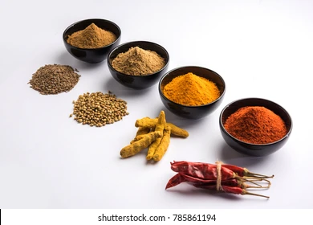

Masala:

Ingredients:
- 9 tbsp Besan
- 3/4 tbsp Red chilli powder
- Salt 3/4 tsps
- 1/4 tsps tumeric powder
- 1 tsps baking soda
- 1 tbsp special masala
Steps:
- Mix besan, salt, red chilli powder, tumeric powder, special masala, baking soda
- Mix
- Slowly add water and whisk until a "muddy" consistency
- Add "condiments", these could be onions, spinach, potato, coriander
- heat oil on medium heat
- add a bit of batter in oil to test. If it stats sizzling, frying with bubbles, you're ready to fry pakoray
- Slowly add batter in "bits" with condiments. Do not over crowd
- take out and place on kitchen tissue when the colour seen in the above picture